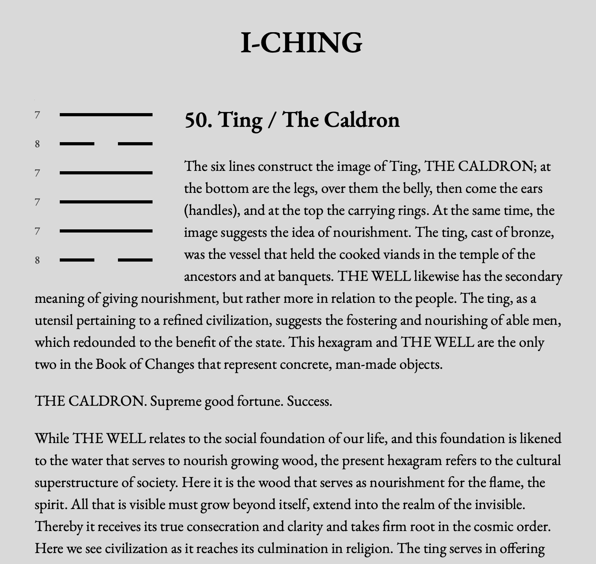
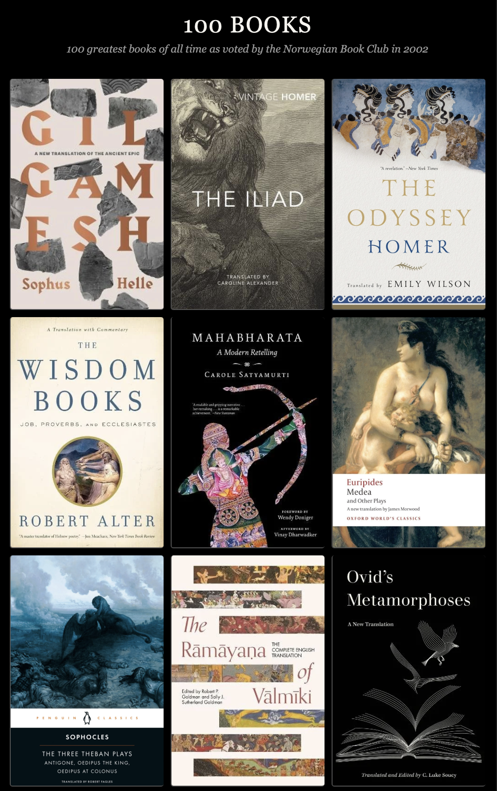
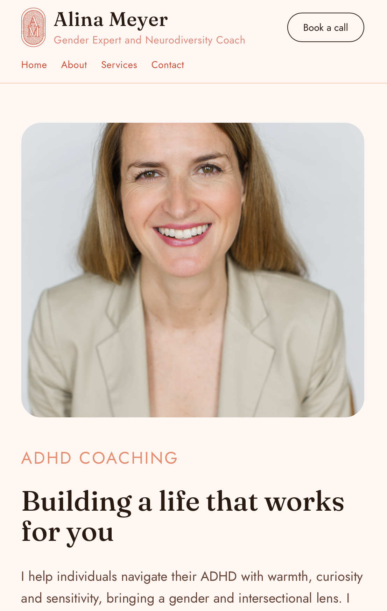

Code
I completed a JavaScript bootcamp with Northcoders, where I learned the fundamentals of writing clean, functional code. Since finishing I've kept building independently — vanilla JS, CSS layout, data structures, and working with AI tools as part of the process.

I Ching
A digital companion to the Book of Changes, built in vanilla HTML/CSS/JS with a coin-throw algorithm modelled on the yarrow stalk method.

One Hundred Books
A React site for the Norwegian Book Club's 100 greatest books list — browsable as a grid, timeline or world map.

Borough Books
React Native app with a custom backend — commenting, voting and posting, built end to end.

NC News
Full-stack Reddit-style news app — custom API, database, comments and voting.

alinameyer.com
My first client project — a personal site designed and built for Alina Meyer.
A Game of Love and Hate
A Breakout-style canvas game built while learning the Canvas API — LOVE vs HATE.